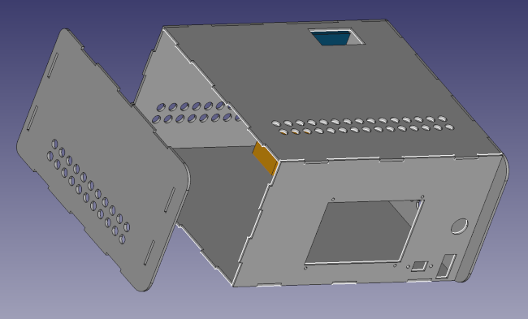
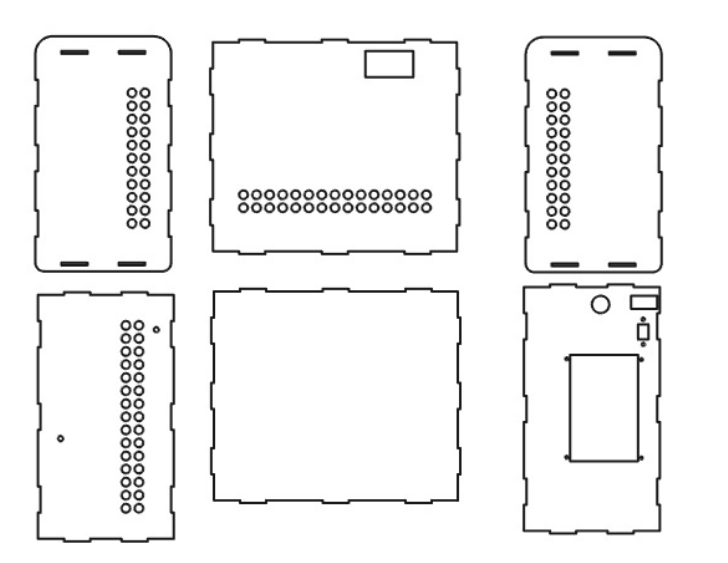
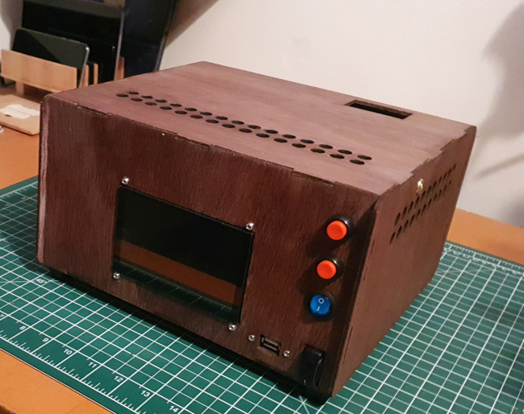
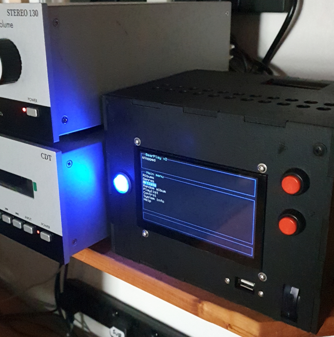

Making tab-and-slot boxes for electronic prototypes. Or: how I stopped worrying and learned to love the laser
 I make a lot of one-off electronic gadgets.
Usually I make a first prototype
from Foamex or similar board. Then, if that
turns out OK, I make a more permanent unit from
plywood. I have the usual woodworking tools -- bench saw and drill,
squares, clamps, etc -- but it's painfully time-consuming to make an enclosure
with many non-circular cut-outs. If I'm lucky, the front-panel controls
will have enough bezel to hide the inaccuracies in my cutting, but that
can't be guaranteed.
I make a lot of one-off electronic gadgets.
Usually I make a first prototype
from Foamex or similar board. Then, if that
turns out OK, I make a more permanent unit from
plywood. I have the usual woodworking tools -- bench saw and drill,
squares, clamps, etc -- but it's painfully time-consuming to make an enclosure
with many non-circular cut-outs. If I'm lucky, the front-panel controls
will have enough bezel to hide the inaccuracies in my cutting, but that
can't be guaranteed.
The design I'm currently working on uses a screen that has no bezel. The front-panel cut-out has to be absolutely perfect, or it would look dreadful.
So I have decided to embrace the 21st century at last, and learn how to make neat enclosures using a laser cutter. The fashion at present is to make 'tab-and-slot' boxes, and with good reason: if the cutting is planned properly, the final enclosure will be robust and easy-to-assemble. It may even hold together using just the friction between the tabs and slots, without any glueing.
Note:
I should point out that I haven't bought my own laser cutter -- not yet, anyway. I'm preparing drawings to send to a commercial fabricator.
This article is about my early experiments with laser cutting, and what I learned from them. I don't claim to be any kind of expert -- I'm writing this in the hope that it might be of some help to people thinking of taking the same first steps in laser cutting.
Choice of materials
While almost anything can be laser-cut, choice of materials depends to a large extent on the kind of fabricaton business you choose (or the kind of laser you buy, if you're really keen).
There seem to be two kinds of commercial laser cutting operations in the UK: one kind caters mostly for commercial, high-volume production, and will have high-powered equipment for cutting metal. The other specializes in low-volume production for hobbyists and prototypers. These firms usually have comparatively low-powered equipment, and work with card, plywood, MDF, and acrylic. There are plenty of both kinds of business around the country.
Some businesses keep a stock of sheet material, others expect you to send your own. If a business keeps its own stock it may, or may not, allow you to provide your own.
Since metal-cutting operations are ruinously expensive for small volumes, the choices for the hobbyist are probably plywood, acrylic, or MDF.
Plywood
Plywood is strong in compression, tension, and bending. It's flexible, which is both a strength and weakness. It can be painted, stained, or varnished. As the surface is real wood. It can look quite nice with proper treatment. Plywood is available in thicknesses down to 2mm, but 3mm is probably the thinnest that I would consider for an enclosure, and then only a small-ish one.
MDF
Medium density fibreboard, MDF, is strong in compression, but that's all. It's brittle and non-flexible. It's much cheaper than plywood. It can be painted, and probably needs to be, as the surface finish is unattractive. It scratches easily. Working MDF with bench tools requires special precautions, because it gives off nasty fumes and dust. For larger enclosures (more than, say, 200mm on a side) the low flexibility of MDF perhaps gives it the edge over plywood, so long as you don't mind painting it.
The laser scorches the cut edges of both plywood and MDF, particularly the thicker pieces. This doesn't necessarily look bad, and will be hidden by staining or painting.
Acrylic
Acrylic is a plastic material that is strong in tension and compression. It bends a little, and then snaps; if dropped, it tends to shatter. It's a great material for electronic enclosures if laser cutting is available, because it's light and strong, and needs no finishing. Working it with bench tools is horrible. Acrylic comes in a huge range of colours and finishes. Probably 5mm is the thinnest I would want to use for an enclosure; maybe 4mm at a pinch. Acrylic is the most expensive of the common materials available for low-volume work.
Thickness
Good thicknesses for enclosures are probably 3mm-6mm. 3mm in plywood or acrylic is rather flexible and, for larger sizes, that flex will need to be tamed by gluing or screwing. None of the widely-available materials have any significant flexibility at 6mm thickness. Unfortunately, not all lasers can make perfectly vertical cuts in 6mm. That imperfection is probably not visible to the naked eye, but it's problematic for tab-and-slot boxes, where the tabs and slots need to mate together perfectly.
In addition, 6mm might be too thick for panel-mounting controls.
So far I have been using 3mm-4mm plywood and MDF, perhaps laminated with additional hand-cut material on the inside, where the additional pieces can't be seen. This hand-made lamination gives the rigidity and weight of thicker material, but without most of the disadvantages. Of course, the additional laminating pieces have to be cut, which takes time; but not much time, as no great precision is required, as they will be unseen.
Incidentally, it's by no means compulsory to make all parts of the enclosure from the same material, or even the same thickness. However, for tab-and-slot boxes, one surface's thickness is another's rabbet depth; working with materials of different thickness will complicate the design a lot.
Software and file formats
Fabricators vary in the drawing formats they will accept. However, everybody I've asked accepts DXF, and most drawing software can produce this format.
Note:
Fabricators often use colour in drawings to indicate the type of operation -- cut, score, engrave. It's worth checking this before sending in your drawings.
I'm using FreeCAD to produce my drawings, and not just because it's free. A great strength of FreeCAD -- albeit one that is difficult to master -- is its support for parametric modeling. This means that the software can work out specific, individual dimensions according to the designer's constraints. Some of these constraints are simple ones -- this edge is vertical, this length is the same as that length, and so on. But the constraints can involve complex relationships between dimensions.
Parametric modeling is great for tab-and-slot boxes, because of the huge number of dependencies between dimensions. Most obviously, a tab on one part ('body', in FreeCAD jargon) is a slot in another. The slot rabbet in one part will be the thickness of another. And so on. Working with all these dependencies by hand is a drag. And if you change even one dimension, you get to work out all the others again from scratch.
When the parametric model is set up -- and I don't want to give the idea that this is easy, because it isn't -- all the dependencies between parts is handled automatically. So if I I want, for example, to make the enclosure a couple of inches narrower, I just change one dimension, and (all being well) everything else gets recalculated. For prototyping, where you don't necessarily start with a perfect understanding of size and shape, this recalculation can be a huge time-saver. Of course, there is a much longer initial set-up time, which needs to be taken into account.
FreeCAD is a three-dimensional drawing tool, but DXF is a two-dimensional format. Conversion to DXF is not really automatic -- you need to project each part into a specific plane, and then export that plane to DXF.
Nothing about FreeCAD is easy or intuitive, but the same goes, really, for any CAD software. I find 3D Studio Max much easier to use, but that's probably because I've been using it for decades. The parametric aspect of FreeCAD can be particularly frustrating, but it seems worth persevering with it, for this kind of application. Happily, there are quite a few good tutorials on YouTube, etc. -- but only a fraction of the number available for 3DS Max.
In general, the fabricator will arrange the parts to use the least material (that's part of what you're paying them for) so there's little need to fiddle with the 2-dimensional export of the drawing.
The picture below shows the FreeCAD render of the enclosure I've been working on recently.

And here's what the two-dimentional DXF export looks like, with the sides of the enclosure separated:

And here's the final result, cut from plywood, stained and varnished.

I appreciate that the olde-worlde aesthetic won't be to everyone's taste, but it does hide the cut edges of the plywood a bit. You might notice that there are two extra controls in the final construction, compared to the drawing. These are for push-buttons that I (sigh) forgot to put in the drawing. The good thing about working with plywood is that it is straightforward to make manual alterations after cutting. But the fact that these extra controls are not perfectly aligned does indicate how much more accurate the laser cutter is than me.
Here's a later design, make from 4mm MDF, finished with matte black spray paint.

What I learned
The final results are neater than I could have managed with bench tools, however much trouble I had taken. But it's a tab-and-slot box, so it still looks like a prototype. Here are a few things I learned making it.
First, commercial laser cutting is expensive. I'm told that most of the price is for wear on the laser, rather than operator cost. It's more expensive to cut thicker materials, or to make lots of cuts. The raw materials contribute relatively little to the overall expense. There seem to be few savings in having multiple units made from the same drawing, even though there's no extra work for the machine operator to do, after setting up the first cutting.
Of course, I consider my time to be expensive as well. Having the enclosure laser-cut probably saved me about eight hours at the bench, but the biggest consumer of my time was making the drawings. Learning FreeCAD took quite a few hours but, even having kind-of mastered FreeCAD, it would still take me quite some time to make new drawings. Tab-and-slot boxes are particularly awkward to draw, because all the dimensions have to match so perfectly. On balance, I probably didn't save any time getting the box laser-cut, compared to just laying about me with a saw; but this particular case is one that I probably couldn't have made acceptably that way, because of the precision of the display cut-out.
But if the only problem with making the box by hand were the display cut-out, I could have just laser-cut a neat display bezel, and made the rest by hand.
Because laser cutting is so expensive, I initially made the dimensions much more generous than they needed to be. I figured it would be better to have the enclosure a bit too large, than to have make it again. After a couple of weeks of having the completed unit on my shelf, I got fed up with how large it was, and made a smaller one.
I think that 3mm is really too thin for a box of this size. As I explained early, I've strengthened it with additional wooden pieces. But I can't really do that with the front panel -- there are too many holes in it. So the front panel bows very slightly outwards. This isn't evident in the photo -- it's less than half a millimetre -- but it's noticeable close-up. The smaller enclosure, made from 4mm material, has very little flex.
I wasn't entirely surprised, but MDF is hard to paint. Even though I used a proprietary (expensive) MDF primer, the surface finish didn't bind to the primer very well. With rough handling, it's easy to put dings and scratches in it.
If I wanted to make a case that had the advantages of tab-and-slot construction, but looked more elegant, I could have an extra, superficial front panel made from very thin metal -- probably aluminium. I've already drawn the tab-and-slot front panel, so drawing the 'presentation' metal panel would only take a few minutes. Laser cutting being what it is, the presentation panel should end up a perfect match for the existing plywood one, and could simply be epoxied on top of it. Laminating the metal front panel onto the wooden one would add to the rigidity as well.
Closing remarks
There's a lot to learn about laser cutting, even if all you'll be doing is sending drawings to a fabricator. For prototyping or hobbyist applications, I remain conflicted about whether it's worth the time and money. Maybe I need to do some more, to make my mind up.